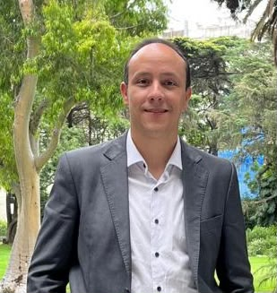
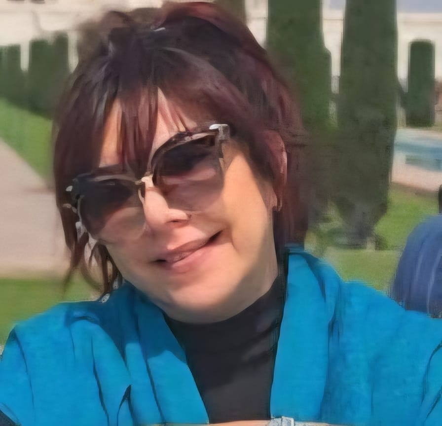
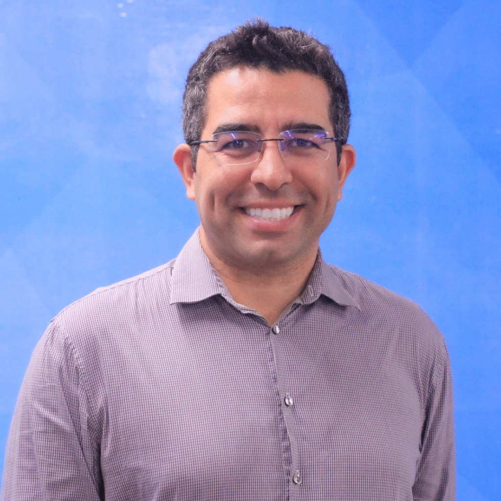
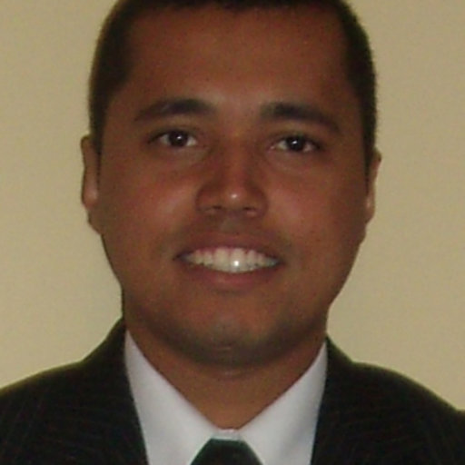
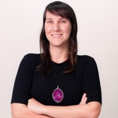
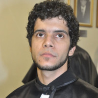
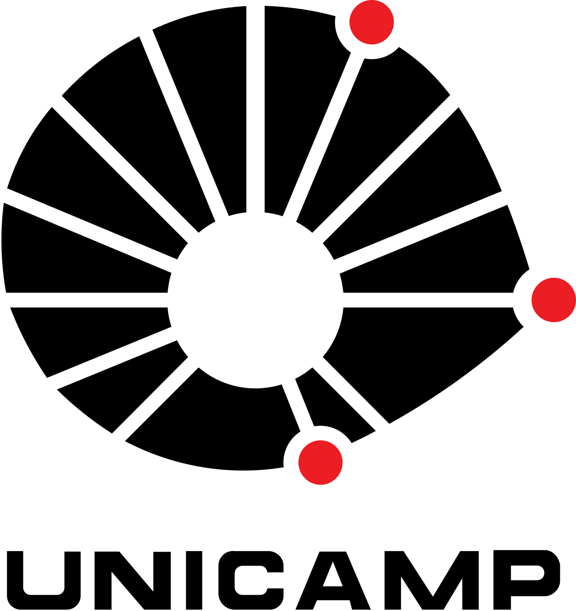
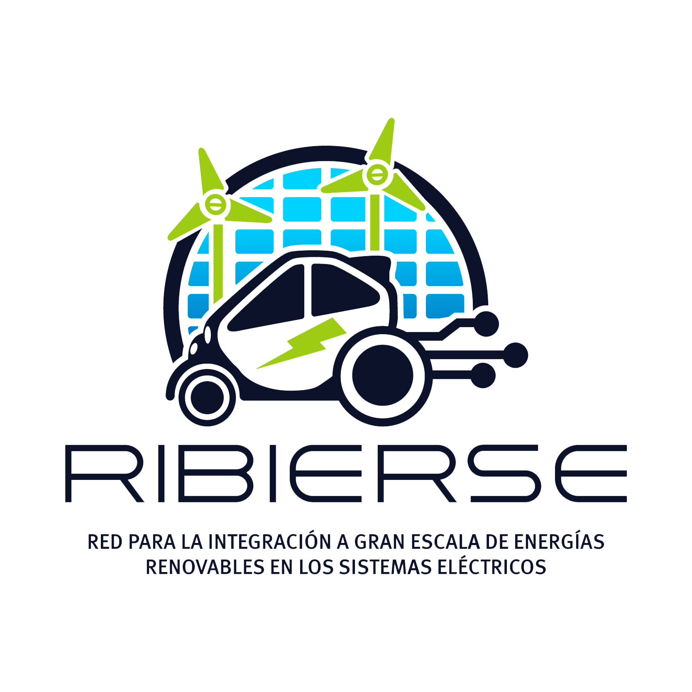
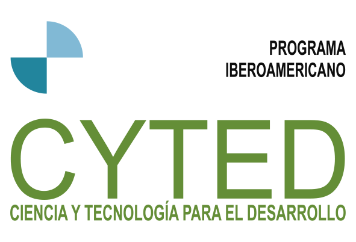

IEEE PES Brazil Spotlight Series
Webinar
Transição Energética no Setor de Transportes
Desafios, Oportunidades e Inovações para a Descarbonização
Programação


14h00
Abertura
Prof. Bruno H. Dias (UFJF)
Prof. Bárbara Teruel (Unicamp)
Prof. Bruno W. França (UFF)
01

14h10
Painel 1: Lei dos Combustíveis do Futuro — Programa Nacional de Combustível Sustentável da Aviação
Prof. Fabrício Campos — Pró-Reitor de Inovação da Universidade Federal de Juiz de Fora (UFJF)
02

14h40
Painel 2: Veículos Elétricos e a Rede de Distribuição: Impactos Locais
Leonardo Francisco da Silva — Mestre em Engenharia Elétrica (LEMT/COPPE/UFRJ)
03

15h10
Painel 3: Análise de Ciclo de Vida de Veículos Leves
Annelys Machado Schetinger — Pesquisadora no Laboratório de Fontes Alternativas de Energia (LAFAE/UFRJ)
☕
☕ Intervalo — 10 minutos
04

15h50
Painel 4: Planejamento Energético Considerando Veículos Elétricos
Leonardo de Arruda Bitencourt — Professor no Departamento de Engenharia Elétrica — Universidade do Estado do Rio de Janeiro (UERJ)
05
16h10
Painel 5: A Transição Energética sob a Perspectiva do Transportador — Barreiras, Investimentos e Oportunidades
Sr. Gustavo Willy — Coordenador do Programa DESPOLUIR e Projetos Especiais, Sistema Transporte — CNT-SEST SENAT-ITL
06
16h40
Abertura para Discussões e Encerramento
Organização



Universidade Estadual de Campinas (UNICAMP) • Universidade Federal de Juiz de Fora (UFJF) • Universidade Federal Fluminense (UFF)
RIBIERSE-CYTED — Rede Ibero-americana para a Integração em Larga Escala de Energias Renováveis nos Sistemas Elétricos
IEEE PES Brasil — Power & Energy Society
RIBIERSE-CYTED — Rede Ibero-americana para a Integração em Larga Escala de Energias Renováveis nos Sistemas Elétricos
IEEE PES Brasil — Power & Energy Society